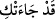
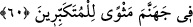

“Âyetlerim” hidâyetin sebebi olan Kur’an âyetleri “sana gelmişti de”
Cenab-ı Hak bu ibâreyi “Allah bana hidayet verseydi...” ifâdesinden ayırmıştır.
Çünkü bunun üçüncüden önce getirilmesi, başında ‘yahut’ lâfzı bulunan üç benzer
ifâdeyi ayırmış olacaktı. Ya da “Allah bana hidayet verseydi...” ifâdesi, üç benzer
ifâdenin söylenme sırasını bozmuş olacaktı. Çünkü kişi önce amel defterleri havada
uçuştuğunda kusurlu davrandığından dolayı pişmanlık duyar. Sonra muttakîlerin hallerini
görüp onlara imrenince hidayetten mahrum oluşunu bahane eder. Daha sonra cehenneme
muttali olup azâbı görünce dünyaya tekrar dönmeyi temennî eder.
Hitabın müzekker yapılması, kasdedilenin insan olması bakımındandır. Hz.
Peygamber (a.s.)’ın nefse hitaben “
” diye bu ifâdeyi ve ondan sonrasını müennes
olarak okuduğu da rivâyet edilmiştir.
“Sen onları yalanlamış,” ‘Bunlar Allah tarafından değil!” demiş, onlara îman
etmekten burun kıvırıp “büyüklük taslamış ve” onları reddeden “inkârcılardan
olmuştun.”
et-Te’vîlâtü’n-Necmiyye’de der ki: “Hayır!” Peygamberler, onların gösterdiği
mûcizeler, kitaplar, bu kitapların içerdiği hikmetler, öğütler, sırlar, hakîkatler, incelikler
ve işâretlerden ibâret olan “Âyetlerim sana gelmişti de sen onları yalanlamış,” onlara
uymaktan ve şartlarını yerine getirmekten imtinâ ederek “büyüklük taslamış ve
inkârcılardan olmuştun.” Yâni peygamberin var olması, kitapların indirilmesi ve
mûcizeler gösterilmesi gibi Allah’ın sana ihsân ettiği nimetleri inkâr eden nankörlerden
olmuştun.”
Mu’tezile mezhebi bu üç âyetin birkaç bakımdan kulun fiillerinde müstakil olduğuna
(Allah tarafından yaratılmadığına) delâlet ettiğini söyler:
1- Kişi geçmiş bir şeye ancak onu yapabilecek bir kudreti olduğu takdirde hasret
çekebilir.
2- Îman bizzat kendi fiili olmayan kimse, bu konuda kusurlu davranmış olamaz.
3- İnsan kendisinin yapmadığı şeylerden dolayı yerilmeyi hak etmez.
Onlara verilecek cevap şudur: Bu âyetler gerek kulun fiilinde Allah’ın kudretinin
tesirini, gerekse fiili kula nisbet etmeyi reddetmez. Çünkü Allah “Hayır! Âyetlerim
sana gelmişti…” buyurmuştur. Kaldı ki “O dilediğine hidâyet eder dilediğini de
saptırır”
âyeti
(en-Nahl,
16/93;
Fâtır,
35/8)
ve
benzerleri
onların
mezhebinin/görüşünün bâtıl olduğuna delâlet eder.
60. Kıyamet gününde Allah hakkında yalan söyleyenlerin yüzlerinin kapkara